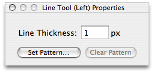

Using the line tool
The line tool allows you to draw—surprisingly enough—lines on your image. By default, it draws one-pixel-wide line, but this can be changed in the rectangle tool's properties window:

To set the line's thickness:
Simply modify the line thickness field in the line tool's properties panel.
To lock the line tool to orthogonal and isometric angles:
Holding the shift key will lock the lines to 45° angles, 90° angles, and isometric slopes (2:1 ratios).
See also
Changing tool properties
Setting a tool's pattern
Tools
Patterns